tChartXYZ Bot User Guide
Welcome to the comprehensive guide for the tChartXYZ Bot, a powerful tool for creating and sharing crypto price charts directly in your Telegram groups. This guide covers everything from adding the bot to your group, configuring it, and using the web constructor to customize your charts.
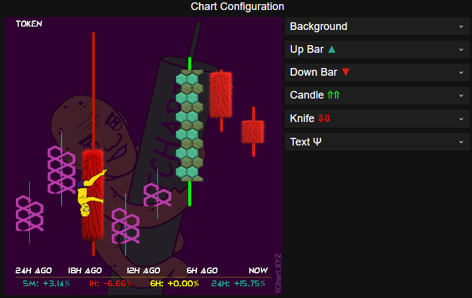
Getting Started (Telegram)
Before you can start creating beautiful charts, you need to add the bot to your Telegram group and set up the necessary permissions.
Adding Bot to Group
To add the tChartXYZ Bot to your Telegram group, follow these steps:
- Search for
@tChartXYZ_botin Telegram. - Once you find the bot, tap on it to open a direct message.
- Click "Add to Group" and select the group you want to add it to.
- After adding the bot, it will send a welcome message to the group with initial instructions.
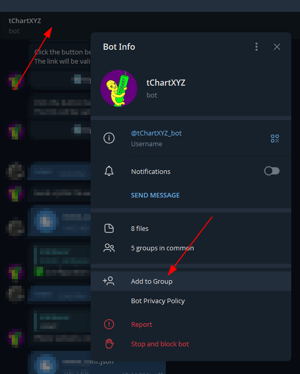
Admin Permissions
To grant admin permissions to the bot:
- Go to your group information.
- Tap "Administrators".
- Select "Add Administrator".
- Find the tChartXYZ Bot in the list and tap on it.
- For basic functionality, the bot needs the following permissions:
- Delete Messages
- Click "Done, Save" to save the permissions.
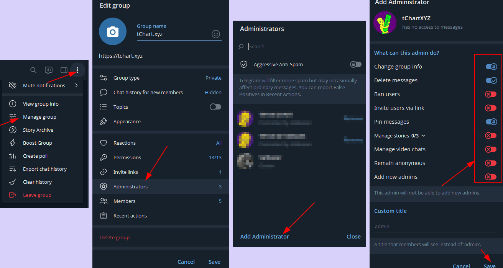
Managing Topics in Groups with Topics Enabled
If your group has topics enabled, you'll need to specify which topic the bot should post in:
- Create a new topic specifically for chart updates (e.g., "Price Charts").
- Make sure the bot has permission to access and post in this topic.
- When using commands, make sure to use them within the desired topic where you want the charts to appear.
Bot Configuration
After adding the bot to your group, you'll need to configure it properly.
Initial Setup
When the bot joins your group, it automatically creates a default configuration file. To start using the bot:
- Use the
/chartcommand in your group to generate your first chart with default settings. - To customize the settings, start a private chat with the bot by clicking on its name.
- In the private chat, use the
/startcommand. The bot will show you a list of groups where you have admin rights. - Select the group you want to configure from the list.
Importing Settings from JSON
If you already have a configuration file, you can import it to quickly set up your bot:
- In the private chat with the bot, select your group from the list.
- Click "Import settings from JSON" button.
- Send your JSON configuration file to the bot.
- The bot will confirm successful import.
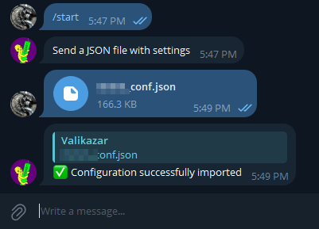
Accessing the Web Editor
The web editor provides a user-friendly interface for customizing your charts:
- In the private chat with the bot, select your group.
- Click the "Edit in web interface" button.
- The bot will generate a unique link valid for one hour.
- Click the "Open Web Editor" button to access the web editor.
- Make your desired changes in the editor.
- After making changes, click the "UPDATE TG" button at the top of the interface to save your changes to the bot's configuration.
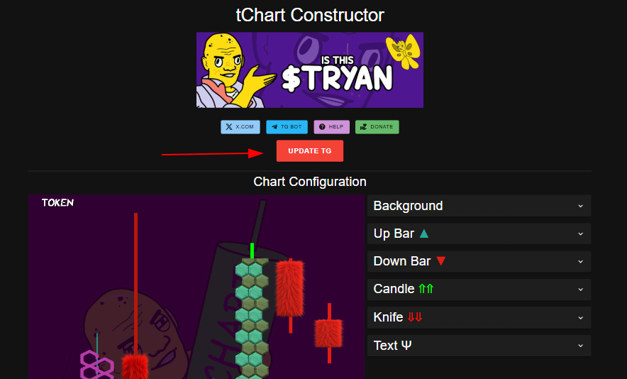
Setting Up Auto-posting
One of the powerful features of tChartXYZ Bot is the ability to automatically post updated charts at regular intervals:
- In the private chat with the bot, select your group.
- Click "Set auto-post interval".
- Enter the interval in hours (e.g., 24 for daily posts).
- Enter 0 to disable auto-posting.
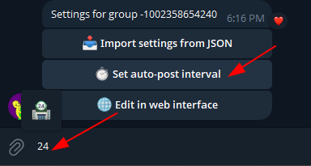
Getting Started (Discord)
The tChartXYZ Bot is also available for Discord servers! This section covers how to add the bot to your Discord server, configure it properly, and start creating beautiful cryptocurrency charts.
Adding Bot to Discord Server
To add the tChartXYZ Bot to your Discord server, follow these steps:
- Click on this invitation link: Add tChartXYZ Bot to Discord
- Select the Discord server where you want to add the bot from the dropdown menu.
- Review the requested permissions and click "Authorize".
- Complete the captcha verification if prompted.
- The bot will join your server and send a welcome message.
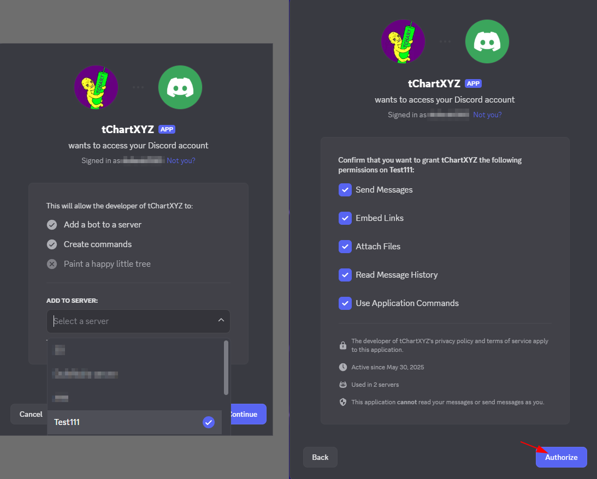
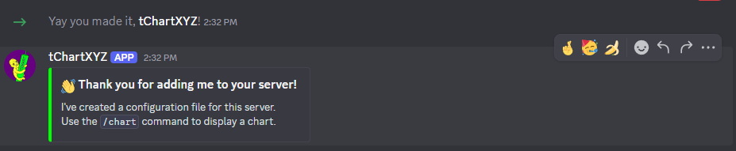
Bot Permissions Setup
The bot requests the following permissions during installation:
- Send Messages: To post charts and respond to commands
- Use Slash Commands: To provide modern Discord slash command interface
- Attach Files: To upload chart images
- Embed Links: To display rich embeds with information
- Read Message History: To process commands properly
If you need to adjust permissions later:
- Go to your server settings.
- Navigate to "Roles" section.
- Find the "tChartXYZ Bot" role.
- Adjust permissions as needed.
Using Discord Commands
The Discord bot supports the following slash commands:
| Command | Description | Usage | Permissions Required |
|---|---|---|---|
/help |
Display help information and welcome message | Type /help in any channel |
Everyone |
/chart |
Generate and post a cryptocurrency chart | Type /chart in any channel |
Everyone |
/settings |
Access bot configuration (private message) | Type /settings in any channel |
Server Administrator |
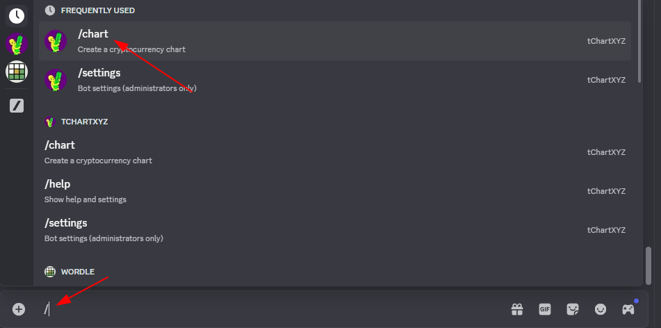
Command Usage Examples
Here's how to use the main commands:
Basic Chart Generation
- Type
/chartin any channel where you want the chart to appear. - The bot will generate a chart using the current server configuration.
- The chart will be posted as an image attachment.
Accessing Settings
- Type
/settingsin any channel on your server. - The bot will send you a private message with configuration options.
- If you administer multiple servers, you'll see a dropdown to select which server to configure.
- Use the buttons in the private message to adjust settings.
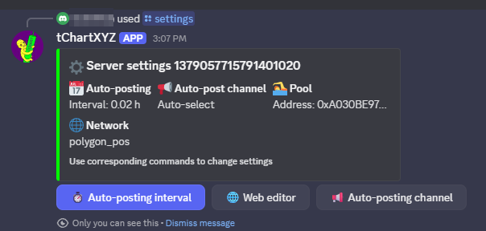
Private Message Configuration
Discord bot configuration happens through private messages for security. When you use /settings:
- The bot sends you a direct message with server selection (if you have multiple servers).
- Choose your server from the dropdown menu.
- Access configuration options including:
- Auto-posting interval setup
- Auto-posting channel selection
- Web editor access
- Import/Export settings (for superusers)
Auto-posting Setup for Discord
To set up automatic chart posting on your Discord server:
- Use the
/settingscommand in your server. - In the private message, select your server.
- Click "📢 Auto-posting channel" button to select a specific channel for auto-posting.
- Choose your preferred channel from the dropdown menu, or select "🚫 Disable auto-posting" to turn off automatic posting.
- Click "⏱️ Auto-posting interval" button to set the posting frequency.
- Enter the interval in hours (e.g., 24 for daily posts).
- Enter 0 to disable auto-posting.
Web Editor Access for Discord
To access the web editor for your Discord server:
- Use
/settingscommand in your server. - In the private message, select your server from the list.
- Click "🌐 Web editor" button.
- Click "🌐 Open web editor" in the response to access the editor.
- Make your customizations in the web interface.
- Click "UPDATE TG/DC BOTs" (this updates both Discord and Telegram configurations) to save changes.
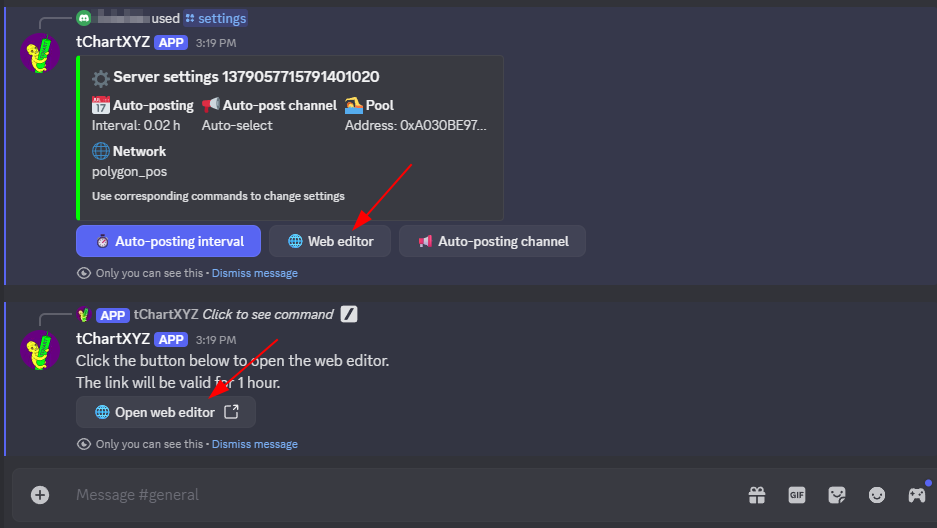
Web Constructor
The web constructor is a powerful visual editor for customizing your charts. This section covers how to use all its features effectively.
Interface Overview
The web constructor interface consists of several key parts:
- Preview area: Shows a live preview of your chart
- Configuration panels: Expandable sections for customizing different aspects of the chart
- Chart parameters: Located at the bottom, for setting token and timeframe information
- Action buttons: For importing, exporting, and updating settings
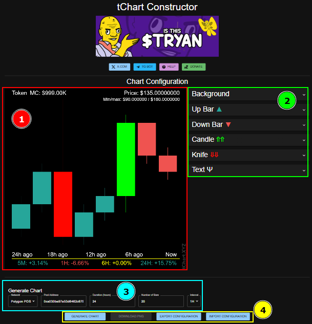
Background Configuration
To customize the chart background:
- Expand the "Background" section by clicking on it.
- Set the background color using the color picker.
- Adjust the background opacity using the slider.
- To add a background image:
- Click "Drop or click to select background image" and select an image from your computer
- Or click "From Gallery" and select from provided library
- Set the overlay color, which provides a tint over the background image.
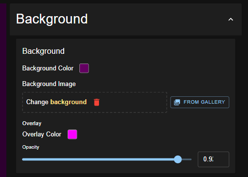
Bar Configuration
The chart has four different bar types that you can customize separately:
- Up Bar: Used when the price is moving up
- Down Bar: Used when the price is moving down
- Candle: Used for positive price movement candles
- Knife: Used for negative price movement candles
For each bar type, you can configure:
- Bar color
- High/Low Line width
- Border settings (width, style, color)
- Optional image overlay
Border Settings
The border settings provide additional customization for the bar body:
- Border Width: Thickness of the border (0 for no border)
- Border Color: Color picker for border color selection
- Border Style:
- Inside: Border appears inside the bar, reducing the body area
- Outside: Border appears outside the bar, maintaining the body area
- Center: Border is centered on the edge of the bar
- Apply to all bars: Option to use the same border settings across all bar types
Line Width Settings
The line width controls the appearance of the top and bottom components:
- Line Width: Thickness of the high/low lines extending from the body
- Apply to all bars: Option to use the same line width across all bar types
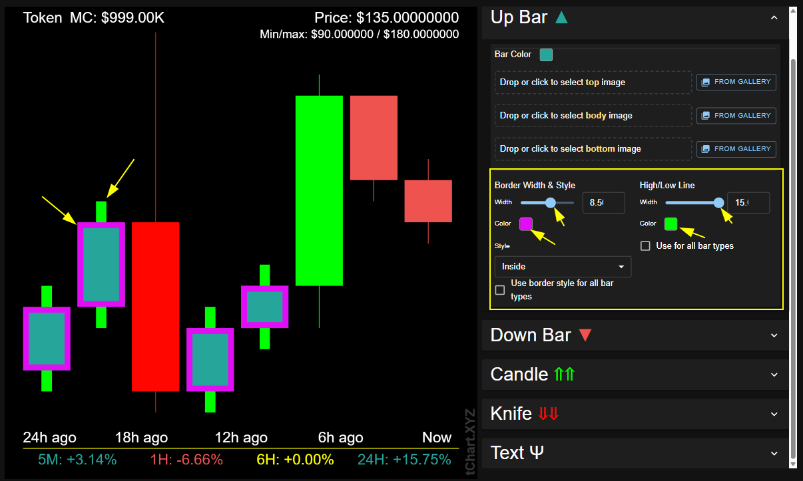
Bar Types and Image Patterns
tChartXYZ offers extensive customization for how price bars are displayed. Understanding the different bar types and how to apply custom images to them allows for creative and eye-catching charts.
Understanding the Four Bar Types
Each bar type represents a different price movement pattern and consists of several components that can be customized individually:
| Bar Type | When Used | Components | Visual Pattern |
|---|---|---|---|
| Up Bar | For price increases (close > open) |
|
Solid rectangular bar with high/low lines |
| Down Bar | For price decreases (close < open) |
|
Solid rectangular bar with high/low lines |
| Candle | Alternative representation for upward movements |
|
Traditional candlestick pattern for bullish moves |
| Knife | Alternative representation for downward movements |
|
Traditional candlestick pattern for bearish moves |
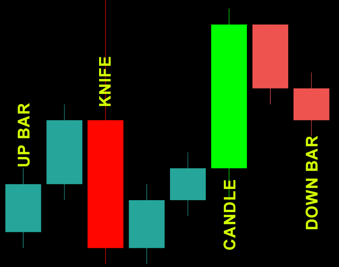
Component-Specific Customization
You can apply different styles and images to each component of a bar:
| Component | Available Customizations | Typical Usage |
|---|---|---|
| Body mage |
|
Main visual element of the bar, often customized with project logos or thematic images |
| Top Image |
|
Represents the top price in the period |
| Bottom Image |
|
Represents the Lowe price in the period |
| Center Image (for Knife or Candle) |
|
Image in the center of the Knife or Candle bar. |
Adding Custom Images to Bars
Each bar type and component can be enhanced with custom images:
- Expand the appropriate bar type section (Up Bar, Down Bar, Candle, or Knife).
- For body customization, use the main image upload section.
- For center customization (Candle and Knife only), find the specific center image section.
- Choose from these options:
- Upload a custom image from your device
- Select from the built-in gallery
- After adding an image, you can adjust:
- Scale: Make the image larger or smaller
- Position: Adjust X and Y offsets to position the image perfectly
- Overlapping: Percentage
- Color Balance: Color Correction

Creative Applications
Here are some ways to use custom images effectively with different components:
- Brand your chart:
- Use your project's logo in the body of up bars
- Use a simplified or monochrome version in down bars
- Add special center images for milestone events
- Thematic designs:
- Holiday themes with seasonal images in the body
- Consistent top/bottom line colors to match theme
- Visual storytelling:
- Use progression of images across different bar types
- Highlight important price points with distinctive center images
Example Setups
Here are some popular image configurations:
- Logo-based:
- Body: Project logo for up bars, simplified version for down bars
- Top/Bottom: Thin lines matching logo colors
- Center (Candle/Knife): Project symbol or icon
- Theme-based:
- Body: Rockets for up bars, falling objects for down bars
- Top/Bottom: Flame effects or motion lines
- Border: Contrasting color to enhance visibility
- Pattern-based:
- Body: Gradient or pattern images rather than solid colors
- Top/Bottom: Matching solid colors
- Center: Accent patterns complementing the body design
Text Settings
To customize the text appearance on your chart:
- Expand the "Text" section.
- Choose the text color using the color picker.
- Select a font from the dropdown menu.
- Adjust the font size using the slider.
- Toggle display options to show or hide specific information:
- Market Cap
- Price
- Timeline
- Price Change
- Token Name
- Min/Max Price
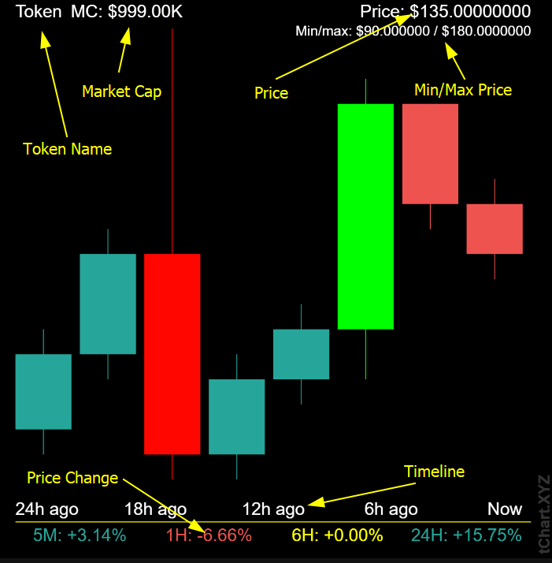
Chart Parameters
To set up the token and timeframe for your chart:
- Scroll to the bottom of the page to the "Chart Generator" section.
- Select the blockchain network from the dropdown (e.g., Ethereum, BSC, Polygon).
- Enter the pool address for the token you want to track.
- Set the chart duration (in hours) for autopost interval (you can change it in TG bot).
- Choose the number of bars to display.
- Select the time interval (minute, hour, day).
- Click "Generate Preview" to test your settings.
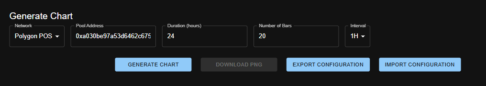
Advanced Features
Export and Import Configuration
You can save and share your chart configurations:
- To export your current configuration:
- Click the "Export" button in the Chart Generator section
- A JSON file with your settings will be downloaded
- To import a configuration:
- Click the "Import" button
- Select a previously exported JSON file
- The settings will be applied immediately
Updating Bot Settings
When editing through the web interface, your changes don't automatically sync with the bots. To update the bot configuration:
- After making changes in the web editor, look for the "UPDATE TG/DC BOTs" button at the top of the page.
- Click this button to send your current configuration to both Telegram and Discord bots.
- You'll see a notification confirming successful update.
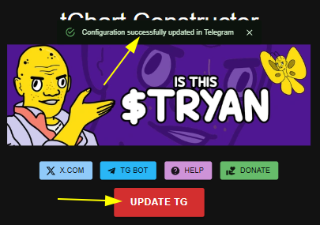
Understanding the JSON Structure
For advanced users who want to manually edit configuration files, here's the basic structure of the configuration JSON:
{
"background": {
"color": "#000000",
"opacity": 0.5,
"image": {
"url": "",
"scale": 1,
"offsetX": 0,
"offsetY": 0
}
},
"overlay": {
"color": "#000000"
},
"font": {
"family": "Arial",
"size": 40,
"color": "#ffffff"
},
"display": {
"showMarketCap": true,
"showPrice": true,
"showTimeline": true,
"showPriceChange": true,
"showTokenName": true,
"showMinMax": true
},
"upBar": {
"color": "#26a69a",
"lineWidth": 1,
"borderWidth": 0,
"borderStyle": "inside",
"borderColor": "#FFFFFF"
},
// Other bar types (downBar, candle, knife) follow same structure
"network": "polygon_pos",
"poolAddress": "0xa030be97a53d6462c675962fec3eafbe53b8bb6c",
"duration": 4,
"numBars": 20,
"interval": "hour"
}
Troubleshooting
Common issues and their solutions:
Telegram Bot Issues
Bot Not Responding
Possible causes:
- Bot doesn't have required permissions
- Bot was removed from the group
- Server issues
Solutions:
- Check bot's admin permissions
- Try removing and adding the bot again
- Check if the bot responds in private messages
Chart Shows "Failed to get chart data"
Possible causes:
- Invalid pool address
- Selected network doesn't match the pool address
- API rate limiting or temporary unavailability
Solutions:
- Double-check your pool address
- Verify you're using the correct network
- Wait a few minutes and try again
Auto-posting Not Working
Possible causes:
- Bot lacks necessary permissions
- Bot was restarted
- Interval set to zero
Solutions:
- Check bot's permissions
- Verify auto-post interval is properly set
- Trigger a manual post with /chart to reset the timer
Discord Bot Issues
Discord Bot Not Responding to Slash Commands
Possible causes:
- Bot doesn't have necessary permissions in the channel
- Slash commands not synced properly
- Bot was recently added and commands haven't appeared yet
Solutions:
- Check bot's permissions in Server Settings > Roles
- Wait a few minutes for Discord to sync commands globally
- Try using commands in a different channel
- Remove and re-add the bot if problems persist
Can't Access Discord Settings (No Private Message)
Possible causes:
- Direct messages disabled from server members
- Bot blocked in private messages
- User not an administrator of any servers with the bot
Solutions:
- Enable "Allow direct messages from server members" in Privacy Settings
- Check if you have administrator permissions on the server
- Unblock the bot if previously blocked
Discord Auto-posting Not Working
Possible causes:
- No channel selected for auto-posting
- Bot lost permissions in the target channel
- Auto-posting interval not configured
- Bot was removed and re-added (resets auto-posting)
Solutions:
- Use
/settingsto configure a specific auto-posting channel - Check bot permissions in the target channel
- Reconfigure auto-posting interval through
/settings - Verify the auto-posting interval is set to a value greater than 0
Discord Charts Not Generating
Possible causes:
- Server configuration not properly set up
- Invalid pool address or network mismatch
- Bot lacks "Attach Files" permission
Solutions:
- Use
/settingsto access web editor and verify configuration - Check pool address and network settings in web editor
- Verify bot has "Attach Files" permission in channel/server settings
Frequently Asked Questions
Can I use the bot in multiple groups?
Yes, the bot can be added to multiple groups, and each group will have its own separate configuration.
Can I use the bot on both Discord and Telegram?
Yes! The tChartXYZ Bot is available on both platforms. Each Discord server and Telegram group maintains separate configurations, so you can customize them independently.
How do Discord slash commands work?
Discord slash commands start with / and provide auto-completion. Simply type / followed by the command name (like /chart or /settings) and Discord will show available options.
Why do Discord settings open in a private message?
Discord bot configurations are sent via private message for security reasons. This prevents server members from seeing administrator configuration options and keeps sensitive settings private.
Can I use the Discord bot without administrator permissions?
You can use basic commands like /chart without administrator permissions, but you need administrator rights to access /settings and configure the bot for your server.
Is there a limit to how many charts I can generate?
There's no strict limit, but there is a cooldown period between manual chart generations to prevent spam.
Can I track any token?
You can track any token that has a liquidity pool on a supported DEX. The bot supports various networks including Ethereum, BSC, Polygon, Arbitrum, and others.
My chart is missing some data, why?
If the token has low trading volume or is very new, there might not be enough data points to generate a complete chart. Try reducing the duration or number of bars.
Can I customize the watermark?
The watermark is a required element. But can be removed fot month payment $2 in Polygon $POL or $1 in $TRYAN.
How do I get support if I have issues?
You can reach out through the Telegram bot or check the official X.com account for announcements and support information.
Where can I find the Terms and Privacy Policy?
You can find our Terms and Conditions and Privacy Policy on their respective pages. These documents outline your rights and our responsibilities regarding the use of tChartXYZ Bot.
↑